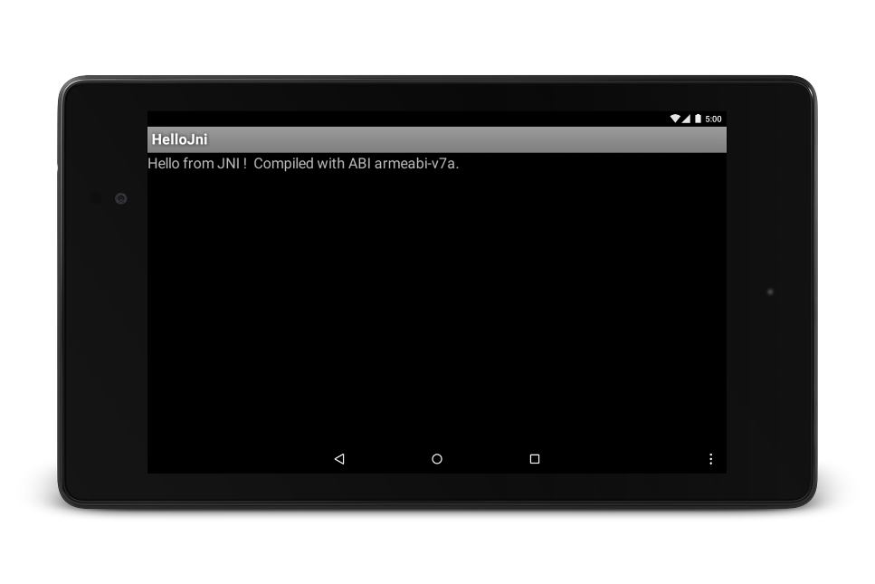

On this page
This document explains how to:
- Get and install the NDK.
- Configure your system and the Eclipse and the Android Development Tool (ADT) for use with it.
- Verify, using a simple sample, that everything is working as expected.
This document assumes that you are already familiar with Java-based Android development. For more information on that topic, see the Android developer site.
Installation
To install and configure the NDK, follow these steps:
- Get and install the Android SDK.if you have not already done so.
- Download and unzip the NDK, making sure to download the correct version for your development platform. You may place the unzipped directory anywhere on your local drive.
- Update your
PATHenvironment variable with the location of the directory that contains the NDK.
Configuring Eclipse
Eclipse must know where the NDK is in order to use it when building your app. Follow these steps to set the location of the NDK.
- Launch Eclipse, which is installed as part of the Android SDK.
- Open Window > Preferences.
- In the pane on the left side of the Preferences window, select Android. The Android section expands, revealing a number of subsections.
- Select NDK. In the pane on the right side of the Preferences window, browse to the directory that contains the NDK.
- Click OK to return to the Package Explorer display.
Verification
Eclipse
To confirm that you have installed the NDK, set it up correctly, and properly configured Eclipse, follow these steps:
- Import the hello-jni sample from
<ndk>/samples/, as you would any other Android project. - In the Project Explorer pane, right-click the project name (HelloJni). A context menu appears.
- From the context menu, select Android Tools > Add Native Support. The Add Android Native Support window appears.
- Accept the default library name (“hello-jni”), and click Finish.
- Build and execute the application.
Command line
Follow these steps to build from the command line:
- Change to the root directory of your project.
- Execute ndk-build to build the native component of your app. do this by
typing
ndk-buildat the command prompt. - Build and install your project as you would a regular Android app written in Java. For more information, see Building and Running and Building and Running from the Command Line.
If you have successfully installed and configured the NDK, the screen on your target device looks as shown in Figure 1.
Figure 1. Target-device screen after successful launch.